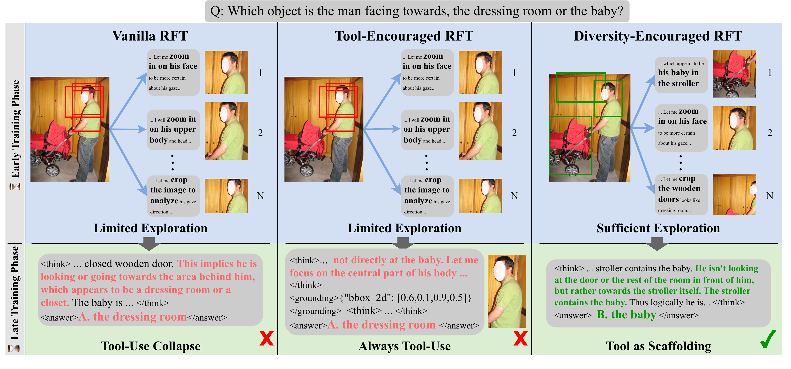
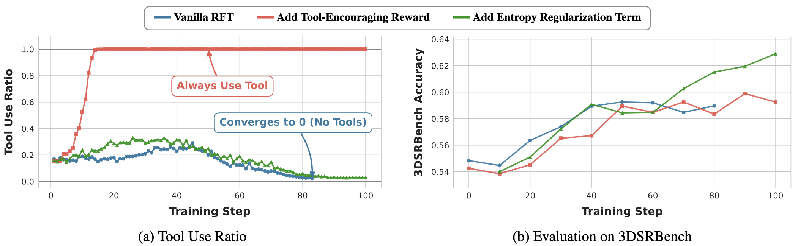
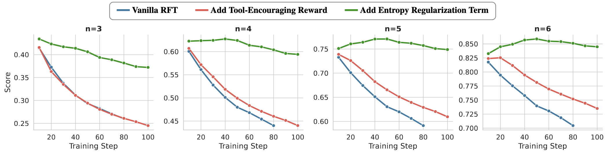
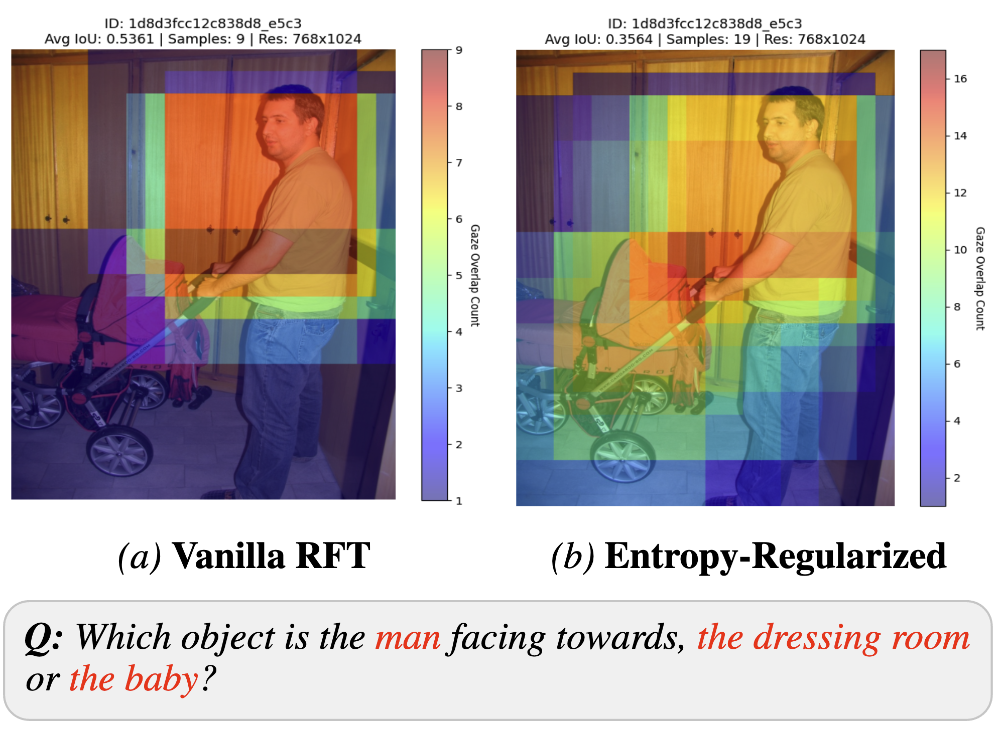
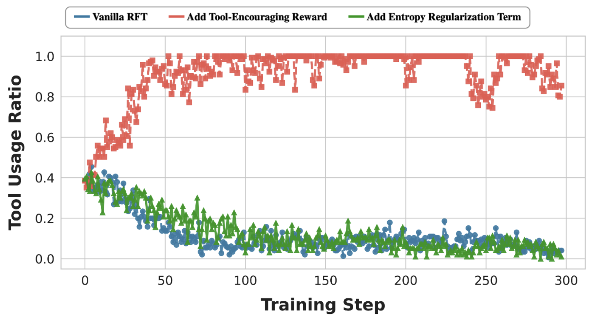

Diversity Over Frequency: Rethinking Tool Use in Visual Chain-of-Thought Agents
Visual tools help most as training-time scaffolding through broader exploration, not through persistent tool usage.

Abstract
A study of tool-use collapse in visual chain-of-thought agents.
Visual agents employ external tools to incorporate fine-grained evidence. While prior work focused on visual search, we investigate harder 3D spatial reasoning tasks.
The central finding is tool-use collapse: accuracy improves while tool use falls toward zero. Explicitly incentivizing tool use yields only marginal gains despite high frequency.
Both vanilla training and reward-based encouragement reduce rollout diversity, whereas adaptive entropy regularization preserves broader exploration and achieves the best performance. This supports a view of tools as training-time scaffolding.
Accuracy improves while tool use declines.
100% tool usage brings marginal gains.
Exploration yields the best performance.
Main results
Tool-use frequency and reasoning performance move differently.

Figure 2 · Training dynamics of tool use and accuracy
Vanilla RFT and reward-based tool encouragement show different tool-use behavior but similarly limited gains. Entropy-regularized training improves performance substantially.
Training summary on 3DSRBench
| Method | Tools? | 3DSRBench Acc. | Tool usage (Init → Sat) |
|---|---|---|---|
| Vanilla RFT | Yes | 59.2% | ~20% → ~2% |
| Tool-banned | No | 58.1% | 0% → 0% |
| Reward-encouraging | Yes | 59.9% | ~20% → 100% |
| Entropy-regularized | Yes | 62.9% | ~20% → ~3% |
| Tool-banned + entropy | No | 57.8% | 0% → 0% |
Exploration analysis
The performance gap comes from diversity in reasoning and crop selection.

Figure 3 · Textual exploration stays diverse
Distinct n-gram ratios decrease steadily for vanilla and reward-based methods. Entropy regularization maintains higher textual diversity.

Figure 4 · Visual exploration
Entropy-regularized models explore regions tied to context, while the vanilla policy fixates narrowly.
Why this matters
- Text space: Diverse reasoning prevents templated thought patterns.
- Visual space: Broader crop exploration improves coverage.
- Interpretation: Tools help most by broadening the training trajectory.
Generalization
The asymmetry extends to a broader tool suite.
Extension to Medical VQA

Figure 5 · Dynamics on VQA-RAD
Vanilla and entropy-regularized training both reduce tool use over time, while reward-based encouragement relies on tools almost always.
Table 4 · VQA-RAD Validation
| Method | Accuracy |
|---|---|
| Vanilla RFT | 46.34 |
| Tool-Encouraged RFT | 47.23 |
| Entropy Regularization | 48.78 |
The best-performing method preserves exploration diversity, confirming dynamics in a medical domain.
Robustness on General Spatial Tasks
Table 3 · Impact on general spatial understanding
| Method | 3DSRBench (Target Task) | CV-Bench-3D (General Domain) |
|---|---|---|
| Qwen2.5-VL 7B | 48.4 | 82.9 |
| Mini-o3 | 54.5 | 77.6 |
| Vanilla RFT | 59.2 | 76.7 |
| Tool-encourage | 59.9 | 74.5 |
| Entropy-regularized | 62.9 | 78.8 |
While standard RFT improves performance on the specific target task (3DSRBench), it actively degrades the model's general depth perception (CV-Bench-3D). Entropy regularization is the only method that improves both specialized and general capabilities, proving that diverse exploration shapes more robust representations.
BibTeX
@inproceedings{kim2026diversity,
title={Diversity Over Frequency: Rethinking Tool Use in Visual Chain-of-Thought Agents},
author={Kim, Dong-Hee and Tan, Reuben and Kim, Donghyun},
booktitle={Proceedings of the 43rd International Conference on Machine Learning},
year={2026},
address={Seoul, South Korea},
publisher={PMLR},
url={https://scaffolded-exploration.github.io/}
}